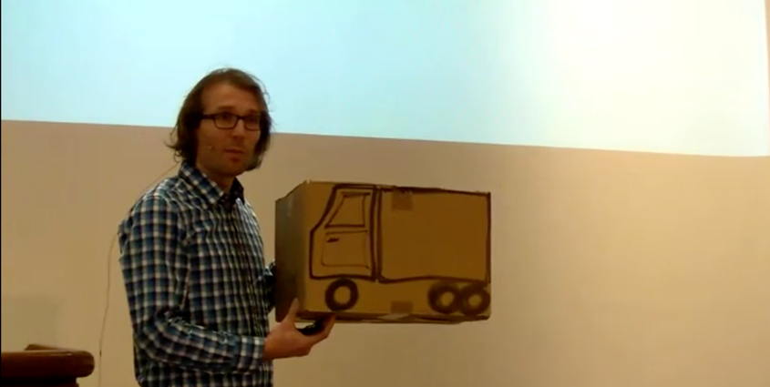

Å overbevise om endring
Hvorfor agerer ikke folk på gode idéer
og hvordan overbevise de om at det bør de?
Torsdagstanker 04.03.2021

if (complain() === true) {
complain().stop();
beAwesome();
}
Stereotype skeptikere

Kverulanten

Den erfarne

Den ferske
Disippelen

Den late

Den irrasjonelle

Du kan ta feil!

Teknikker

Ignorer de irrasjonelle
Fokuser på meningsfeller
Skap felles mål
Forstå ledere
(og få de til å forstå deg)

Relief!

Show not tell
Lag noe som er dødsfett!

Ikke gjør som morra de sier!

Skap publisitet!
Involver folk utenfra

Besøk folk
Vær synlig!
Til slutt
- Ting tar tid
- Suksess skjer i en silo
- Du kan ta feil (men ikke bry deg for mye om det)
- ”Bedre” er ikke et sted. Det er en retning.
Takk for meg!
http://steinim.github.io/slides/hkraft/a-overbevise-om-endring/